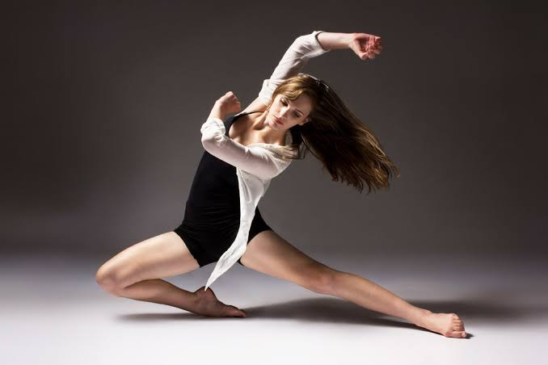
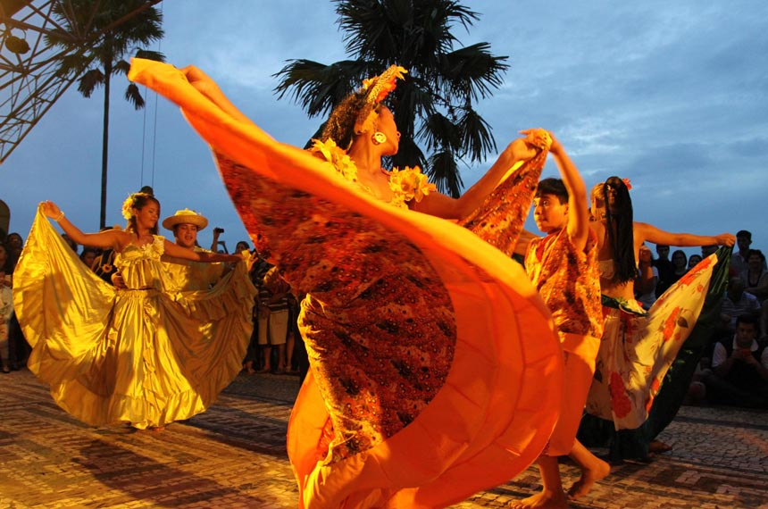
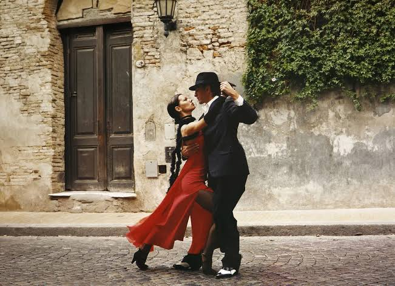
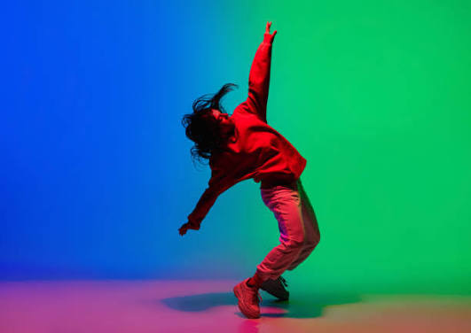
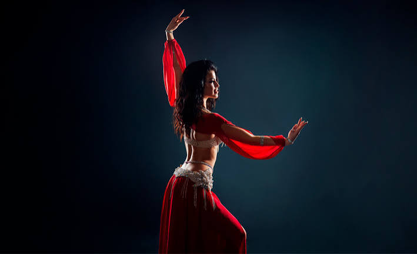

Ritmos que inspiram
Cada ritmo carrega uma história. Conheça movimentos que
nasceram em diferentes cantos do mundo e que
continuam
tranformando a vida daqueles que o consomem.

Liberdade & Expressão
Surgiu no final do século XIX e no início do século XX na cidade de Nova Orleans, nos Estados Unidos. Possuindo uma forte cultura Afro-Americana, se originando através das tradições das comunidades negras após a abolição da escravidão em 1863, reunindo uma junção de heranças de cantos bem como ritmos ancestrais. Além disso, possui características marcantes que vão desde a improvisação até uma forma de expressividade funcionando como uma linguagem de liberdade e resistência.
Música que representa
Louis Armstrong

Raízes & Celebração
O carimbó surgiu no Estado do Pará, região Norte do Brasil, durante o século XVII. Seu nome se deriva de uma palavra tupi, sendo ela 'Korimbó', onde 'Kori' significa pau ou tronco oco e 'mbó' furado, fazendo referência a um instrumento musical utilizado para a definição do ritmo, música e dança. O ritmo surge através de uma fusão de três influências sendo elas: Indígena, Africana e Europeia. Além disso, O carimbó é reconhecido pelo IPHAN (Instituto do Patrimônio Histórico e Artístico Nacional) como Patrimônio Cultural Imaterial do Brasil em 2014.
Música que representa
Pinduca

Paixão & Conexão
O tango nasceu no século XIX na região da Bacia do Rio da Prata, especificamente em Buenos Aires na Argentina e em Montevidéu no Uruguai, onde eram praticadas em subúrbios, bares e bordéis de classe trabalhadora, sendo considerado uma dança marginal. Porém, no século XX teve sua evolução e reconhecimento pelas capitais europeias, como Paris, ganhando, portanto, a aceitação da elite. Além disso, O tango é considerado um Patrimônio Cultural Imaterial da Humanidade pela UNESCO em 2009.
Música que representa
Gerardo Matos Rodríguez

Atitude & Criatividade
O Hip-Hop surgiu nos anos 1970, na cidade de Nova Iorque, surgindo em decorrência ao contexto que seu país estava inserido (Industrialização), fazendo com que a substituição da mão de obra por máquinas gerasse uma desocupação em massa, conflitando diretamente na realidade periférica. É um movimento artístico que reúne música (Rap), dança (Break) e arte visual (Grafite) e tem como seu principal objetivo a denúncia social contra o racismo e a desigualdade, além de relatar a realidade de pessoas que moram nas margens da sociedade.
Música que representa
Grandmaster Flash & The Furious Five

Fluidez & Presença
A dança do ventre, também chamada de Raqs Sharqi pelo oriente, significando Dança do Leste, possui raízes como o Raqs Baladi (dança do povo) e as danças de comunidades tradicionais e ciganas, sendo associada a rituais de fertilidade e culto a deusas na Mesopotâmia ou no Antigo Egito. Foi consolidada a partir do encontro entre culturas locais e as influências no final do século XIX e no início do século XX.
Música que representa
Hassan Abou Seoud